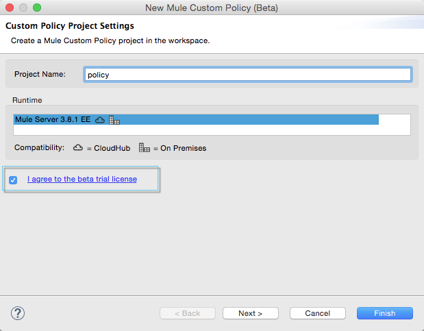
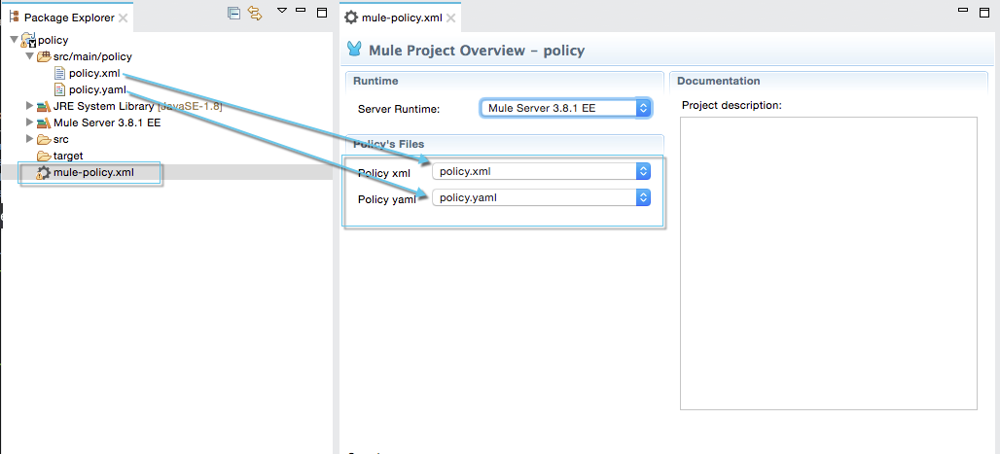
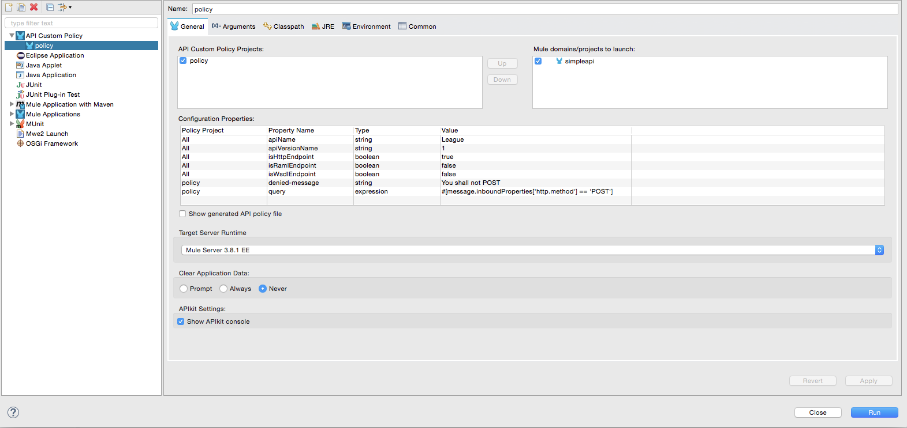

Studio Custom Policy Editor (Beta)
Studio 6.1 (and newer) grants you the ability to create a policy project, under which you can group your custom API policies and apply them to your local Studio deployments.
This way you can compose, debug and test custom API policies within Studio, using an editor that fully supports and validates custom API policies design.
|
The custom policy editor is still in beta and is available only for Enterprise Edition users of Anypoint Studio 6.1 and newer. |
Assumptions
This article assumes that you are familiar using policies in Anypoint Platform and that you are able to create and apply custom policies.
It also assumes that you are familiar with Studio’s Visual Editor.
Usage
|
For this beta release, Studio only supports policy creation and edition through XML. |
In order to create a custom policy project:
-
Right click in your Package explorer and select, New and API Custom Policy Project (beta).
-
Give a Name to your Policy Project, and make sure to agree to the beta trial license:
 -
When you create a Custom Policy Project for the first time, a default example loads containing:
-
a sample policy configuration file:
<?xml version="1.0" encoding="UTF-8"?> <policy xmlns="http://www.mulesoft.org/schema/mule/policy" xmlns:xsi="http://www.w3.org/2001/XMLSchema-instance" xmlns:spring="http://www.springframework.org/schema/beans" xmlns:mule="http://www.mulesoft.org/schema/mule/core" xmlns:mule-ss="http://www.mulesoft.org/schema/mule/spring-security" xmlns:ss="http://www.springframework.org/schema/security" xmlns:api-platform-gw="http://www.mulesoft.org/schema/mule/api-platform-gw" xsi:schemaLocation="http://www.mulesoft.org/schema/mule/policy http://www.mulesoft.org/schema/mule/policy/current/mule-policy.xsd http://www.springframework.org/schema/beans http://www.springframework.org/schema/beans/spring-beans-current.xsd http://www.mulesoft.org/schema/mule/spring-security http://www.mulesoft.org/schema/mule/spring-security/current/mule-spring-security.xsd http://www.springframework.org/schema/security http://www.springframework.org/schema/security/spring-security-current.xsd http://www.mulesoft.org/schema/mule/api-platform-gw http://www.mulesoft.org/schema/mule/api-platform-gw/current/mule-api-platform-gw.xsd http://www.mulesoft.org/schema/mule/core http://www.mulesoft.org/schema/mule/core/current/mule.xsd"> <pointcut> <api-platform-gw:api-pointcut apiName="{{ apiName }}" apiVersion="{{ apiVersionName }}"/> </pointcut> <before> <mule:set-variable variableName="evaluated" value="{{ query }}" /> <mule:message-filter onUnaccepted="policyViolation"> <mule:expression-filter expression="#[!evaluated]" /> </mule:message-filter> </before> <after> <mule:set-property propertyName="Custom-Header" value="Example Policy" /> </after> <mule:processor-chain name="policyViolation"> <mule:logger message="The custom policy filtered the message #[message.getId()] based on a MEL query" level="DEBUG" /> <mule:set-property propertyName="http.status" value="403"/> <mule:set-property propertyName="Content-Type" value="application/json"/> <mule:set-payload value='{ "error" : "Custom Policy: {{ denied-message }}"}'/> </mule:processor-chain> </policy>When designing a custom API in Studio, the
<before>and<after>tags can’t be left empty.
If your design does not require an after tag, don’t declare it. -
a sample policy definition file:
name: Custom Policy Example description: Specifies an MEL *query* expression which when evaluated against incoming messages and returning true, rejects the incoming message. category: Security standalone: true providedCharacteristics: [Message protection] requiredCharacteristics: [] configuration: - propertyName: query name: MEL query description: MEL query expression to filter incoming requests type: expression optional: false defaultValue: "#[message.inboundProperties['http.method'] == 'POST']" - propertyName: denied-message name: Rejection message description: A message to display when an incoming message is filtered type: string defaultValue: Access denied optional: false
-
This sample custom policy bascially blocks all POST requests being sent to your endpoint.
It asserts the MEL expression: #[message.inboundProperties['http.method'] == 'POST'] against the message being received. If there’s a match it prevents the action and returns an Access denied message.
|
You can have more than one configuration and definition file inside the same project. However, you can only apply one pair at a time.
Your Custom Policy Project holds a

|
Applying the Custom Policy in Your Local Deployment
Custom policies are independent of the APIs to which you want to apply them.
You can point a custom policy to one or several APIs by customizing the pointcut conditions to:
-
Point the policy using the
{{ apiName }}and{{ apiVersionName }}reference properties. -
Set up a regex expression to match it with defined endpoints and resources.
However, when designing a custom API in Studio, you need to have at least one local Mule project to deploy and apply the policy.
In order to test how the policy behaves when applied to an API, we are creating a simple Mule Project using a variation of the Leagues API example used in Applying custom policies page:
-
Download this RAML API definition and import it to Studio, so APIKit Studio plugin can automatically generate the flows for your Mule application.
-
Go to the "Global Elements" tab, and Create a new API Autodiscovery element. Assign an API Name, Version and select the flow that contains your APIKit router component as your main flow reference.
The API Autodiscovery element is necessary if you want to leave the
apiNameandapiVersionNameplaceholder properties in your .yaml definition file. You can additionally replace the API name and version in your policy’s configuration file.You can also apply this policy to an existing Mule Project in your Package Explorer, however, make sure to either configure a proper API Autodiscovery element, or manually point your custom policy pointcut to that specific API.
Now that you have one Project to which apply this newly created policy, it’s time to locally deploy everything together.
In order to do so:
-
Right click in your policy project, and select Run as and Run Configurations…
-
The run configuration screen for custom policies is shown:
 -
Select an API Custom Policy Project and a Mule Domain or Project to launch
If you configured an API Autodiscovery element for your projects, when you select the Mule Project, the apiName and apiVersionName properties are automatically updated.
-
Click Apply and then Run
If you inspect your console logs, depending on your logging settings, you might notice an INFO message letting you know that the policy was correctly applied:
com.mulesoft.module.policies.lifecyle.PolicyRegistryLifecycleManager: Policy policy.xml was correctly applied ---
|
You can choose to select |
In order to test if the policy is being applied, open POSTMAN (or any other similar application to send requests) and try to POST anything to 0.0.0.0:8081/api/teams, the response should be align to your configured policy:
{
"error": "Custom Policy: Access denied"
}Know Limitations
Being a beta release, the Custom Policy Editor for Studio has some limitations. Keep the following points in mind when designing and testing your custom policy:
Limitations for the Configuration File
-
XML validation for sections within the policy configuration file (such as
{{#isWsdlEndpoint}} {{/isWsdlEndpoint}}) is not supported. Policies configured using sections such as the one in the example below will run, but the editor won’t validate them before running.<mule:processor-chain name="{{policyId}}-build-response"> <mule:set-property propertyName="http.status" value="403"/> {{#isWsdlEndpoint}} <mule:set-property propertyName="Content-Type" value="text/xml"/> <mule:set-payload value="#[soapFault('client', _invalidClientMessage)]"/> {{/isWsdlEndpoint}} {{^isWsdlEndpoint}} <mule:set-property propertyName="Content-Type" value="application/json"/> <mule:set-payload value="#[_invalidClientMessage]"/> {{/isWsdlEndpoint}} </mule:processor-chain>
Limitations for the Definition File
-
The only supported YAML types for the policy definition file are:
String,Boolean,Int,ExpressionandIpAddress. -
The
hasContractboolean to define wether this custom policy has credentials defined to access other APIs or not, is currently not supported. -
Studio does not validate the
gatewayCompatibilityattribute -
requiredCharacteristicsandprovidedCharacteristicsfields are not validated from Studio -
The
{{order}}attribute from the YAML file is not supported. The order of the policy is overwritten by the other set in the Run Configurations screen.
Limititations for Studio
-
Importing and exporting custom policies from API Platform is not supported
-
Importing custom policies from Exchange is not supported
-
As stated earlier, this feature is currently aimed for local testing. Currently it’s not possible to run your custom policies against your APIs in API Manager and validate them there.
-
You can only configure one
ApiNameandApiVersionattribute in the Run Configuration. -
The Visual Debugger does not support debugging of custom policies.
-
There is no MUnit support
-
Maven support for Custom Policies is not supported